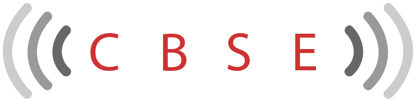

Led the institute domain IIT_JEE in Indore which carved a path for adopting the Kota system successfully outside of kota the institute when helped many students achieve selection in iit-jee along with rank in 1st 100 in iit which was a very rarity outside institutes of kota especially in indore this particular success was based on the team which was competent and committed
Starting of domain E around 2006 kota still had students coming to coaching for competitive examination but there was no authentic coaching for board exams thus the students ending up achieving lower than their potential in the crucial board exams hence domain e was started to help these students
After years of experience in education it has been
understood that it is difficult to scale
education in a conventional branching/franchising way without compromising on the quality &
other challenges associated with remote
management
Hence the company evolved a system for providing Live Online Education
Inception of livecbse: In the year 2014 domain E started live coaching with realtime interactions via internet for CBSE Board Exam Preparation Over these years it has been proven that it is as effective as our physical coaching. Many students have registered for successive academic sessions (9th to 12th) and scored in range of 90 percent validating the effectivity of the live Mode Of Coaching